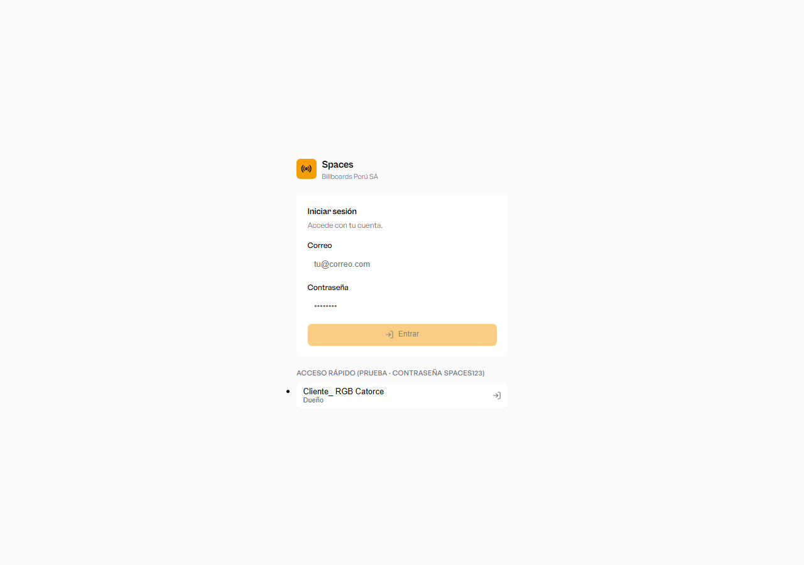
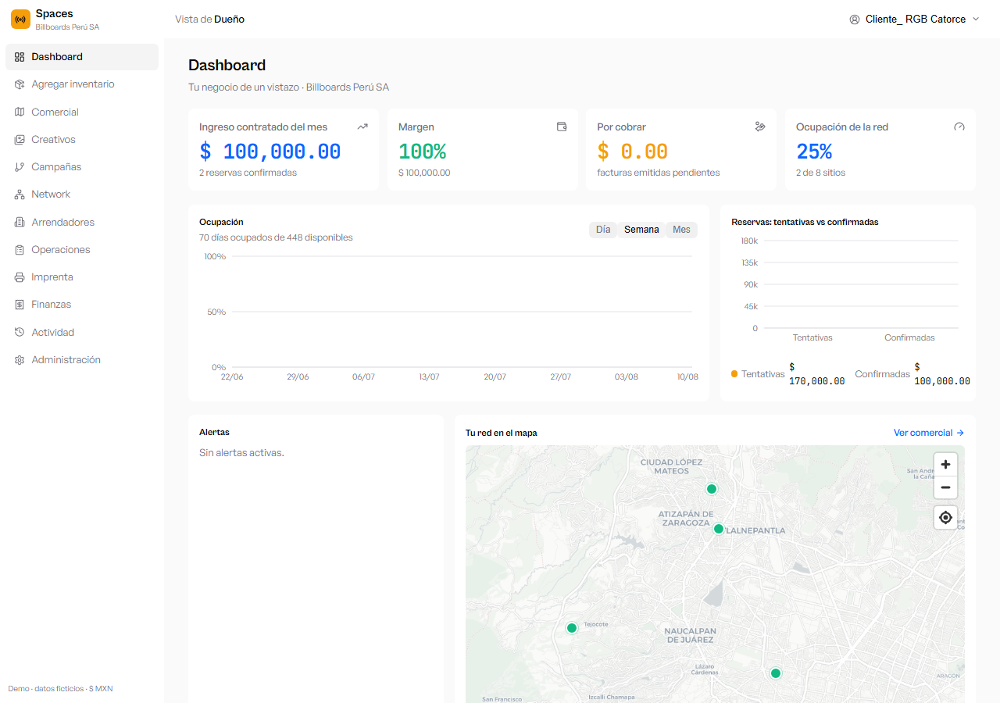
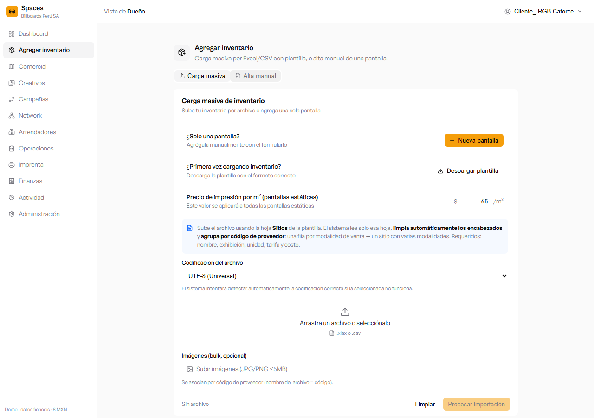
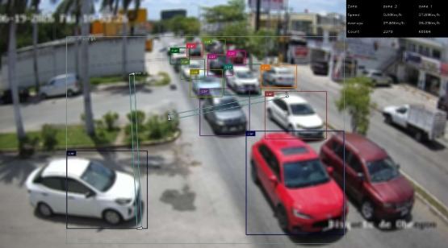
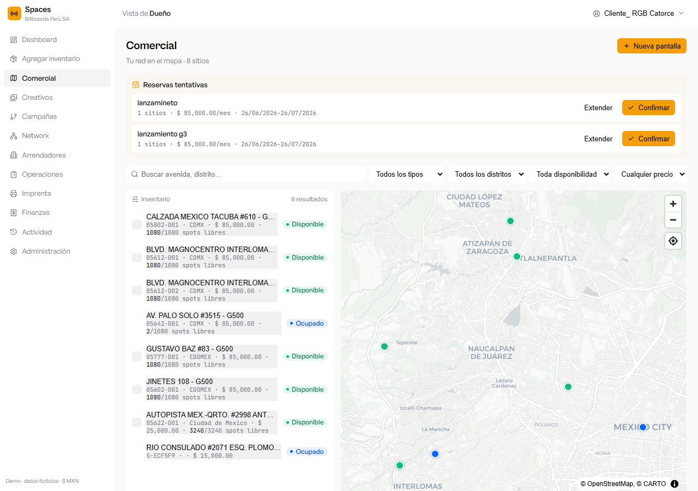
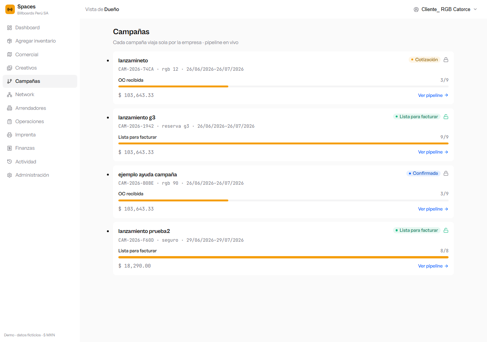
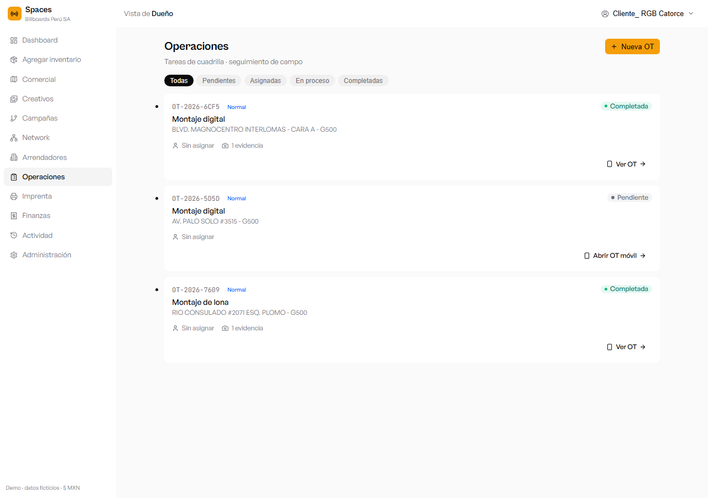
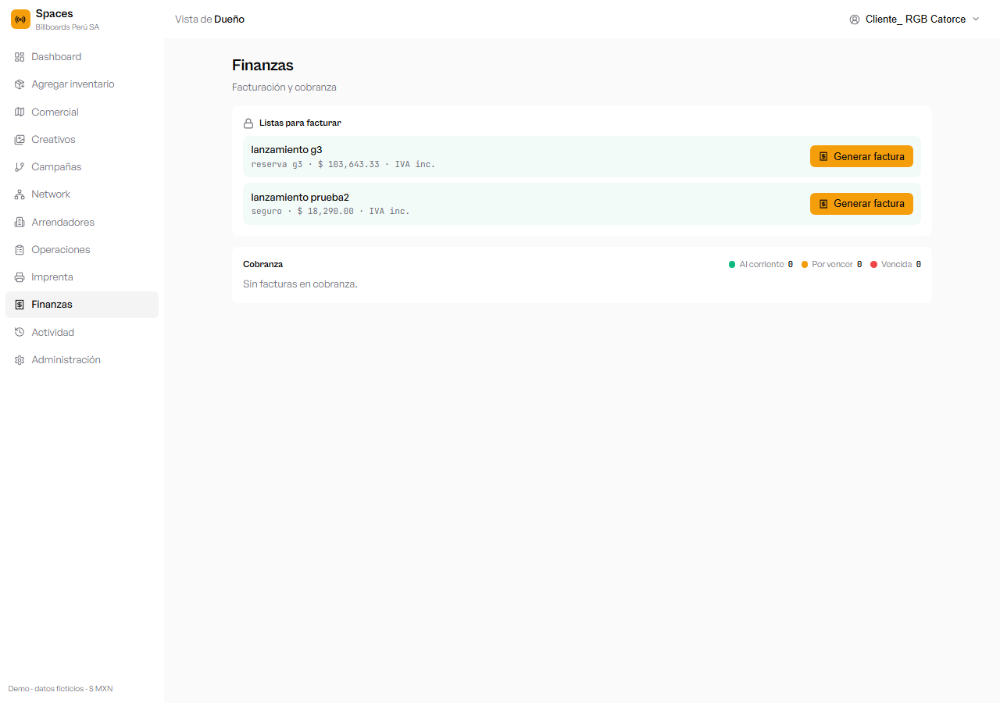

Manual de usuario · Plataforma de gestión DOOH (versión demo)
Guía de las funcionalidades de la plataforma: acceso, dashboard, inventario de pantallas
con Inteligencia Artificial, comercial, campañas, operaciones de campo, mapas inteligentes
y finanzas.
Documento de demostración · Billboards Perú SA
Versión del manual: 1.1 · Incluye capturas de pantalla de cada módulo
Contenido
Acceso a la plataforma
Usuarios y roles
Dashboard (vista general)
Inventario: alta de pantalla con Inteligencia Artificial
Comercial e IA en la ficha del sitio
Mapas inteligentes y código de colores
Campañas y pipeline por tipo de medio
Operaciones: órdenes de trabajo (OT)
Finanzas
1. Acceso a la plataforma
La plataforma se abre desde el navegador en la siguiente dirección:
http://localhost:3000/spaces-dooh/demo/login/
Ingresa tu correo y contraseña.
Presiona Entrar.
El sistema te lleva a la pantalla principal según tu rol.

Pantalla de inicio de sesión
La contraseña de todos los usuarios de prueba es spaces123.
2. Usuarios y roles
Correo
Rol
Qué puede hacer
jose@pixeled.com.mx
Dueño
Acceso total a todos los módulos.
emiliano@rgb.com
Comercial
Inventario, campañas, reservas y clientes.
operaciones@rgb.com
Operaciones
Órdenes de trabajo, sitios y campo.
imprenta@rgb.com
Imprenta
Producción e impresión de lonas.
carlos@rgb.com
Finanzas
Facturación y cobranza.
Contraseña para todos: spaces123
3. Dashboard (vista general)
Al entrar, el Dashboard resume el negocio: ingreso contratado del mes, margen,
por cobrar, ocupación de la red, reservas tentativas vs. confirmadas y tu red en el mapa.

Dashboard — indicadores y mapa ampliado de la red
4. Inventario: alta de pantalla con Inteligencia Artificial
En Inventario se administran las pantallas. El alta organiza la información en
pestañas: Básico, Especificaciones, IA/Vision, Precios e
Imágenes.

Módulo de Inventario
Activar la Inteligencia Artificial (Computer Vision)
Abre Inventario → Nueva pantalla y ve a la pestaña IA/Vision.
Marca «Esta pantalla cuenta con tecnología de Computer Vision (IA)».
Captura el ID del dispositivo AdMobilize (ej. ADM-00123).
Presiona «Ver imagen de detección IA» para ver la detección de vehículos y personas.

Vista de detección por Computer Vision: cajas, velocidad y conteo por zona
Imagen promocional obligatoria. Para guardar una pantalla hay que
subir su foto promocional en la pestaña Imágenes (es independiente de la imagen de
detección IA, que es solo de visualización).
5. Comercial e IA en la ficha del sitio
El módulo Comercial muestra el inventario comercializable en lista y en mapa, con
las reservas tentativas a confirmar.

Módulo Comercial — lista de pantallas y mapa (verde = disponible, azul = ocupado)
Al abrir la ficha de un sitio, la sección «Inteligencia artificial» indica si la
pantalla tiene IA:
Con IA · Computer Vision Tiene IA: muestra el
ID de AdMobilize y el botón «Ver imagen de detección IA».
Sin IA No cuenta con el módulo de IA.
6. Mapas inteligentes y código de colores
Nombres de los lugares
Al acercar el zoom, los nombres de las pantallas aparecen automáticamente.
Al alejarte, se ocultan para mantener el mapa limpio.
Al pasar el cursor sobre un punto, su nombre se muestra en cualquier zoom.
Código de colores del estatus
Color
Estatus
Significado
Verde
Disponible
Libre para comercializar.
Azul
Ocupado
Vendido / campaña confirmada al aire.
Ámbar
Reservado · tentativo
Reserva tentativa por confirmar.
Rojo
Bloqueado
Bloqueado por incidencia.
7. Campañas y pipeline por tipo de medio
El pipeline de cada campaña muestra su avance, desde la reserva hasta que queda
lista para facturar. Las etapas se adaptan al tipo de medio:

Módulo de Campañas
Tipo de campaña
Revisión de creativo (recibido / validado)
En imprenta
Fija (OOH)
No
Sí
Digital (DOOH)
Sí
No
Híbrida
Sí
Sí
Una campaña fija pasa por imprenta y no tiene revisión de creativo.
Una campaña digital tiene revisión de creativo pero no pasa por imprenta.
Una campaña híbrida conserva ambos flujos.
Flujo paso a paso: Fijo vs Digital
Las etapas exclusivas de cada medio van resaltadas:
En imprenta solo en fijo y
Creativo recibido/validado solo en digital.
Flujo FIJO (OOH) — espectaculares, lonas
Flujo DIGITAL (DOOH) — pantallas digitales
Reservada
Confirmada
OC recibida
En imprenta (se imprime la lona)
En producción
Instalada / al aire
Reporte generado
Lista para facturar
Reservada
Confirmada
OC recibida
Creativo recibido
Creativo validado
En producción
Instalada / al aire
Reporte generado
Lista para facturar
Comparativo etapa por etapa
Etapa
Fijo (OOH)
Digital (DOOH)
Reservada
Sí
Sí
Confirmada
Sí
Sí
OC recibida
Sí
Sí
Creativo recibido
No
Sí
Creativo validado
No
Sí
En imprenta
Sí
No
En producción
Sí
Sí
Instalada / al aire
Sí
Sí
Reporte generado
Sí
Sí
Lista para facturar
Sí
Sí
8. Operaciones: órdenes de trabajo (OT)
En Operaciones se gestionan las tareas de cuadrilla (montajes, mantenimientos,
inspecciones) mediante órdenes de trabajo.

Módulo de Operaciones
Crear una nueva OT
Presiona «Nueva OT» y elige el Tipo de tarea.
Escribe la Descripción.
Elige la Campaña: el sitio se selecciona automáticamente según su reserva.
Define la Prioridad y presiona Crear OT.
Sitio automático. Al elegir la campaña, el campo Sitio se llena
solo con la pantalla reservada (marcado «auto por campaña»). Si la campaña tiene varias,
puedes elegir entre ellas; con «Sin campaña» el sitio vuelve a selección libre.
9. Finanzas
El módulo Finanzas concentra la facturación y la cobranza de las campañas.

Módulo de Finanzas
Spaces — Manual de usuario (versión demo). Documento generado para fines de demostración.